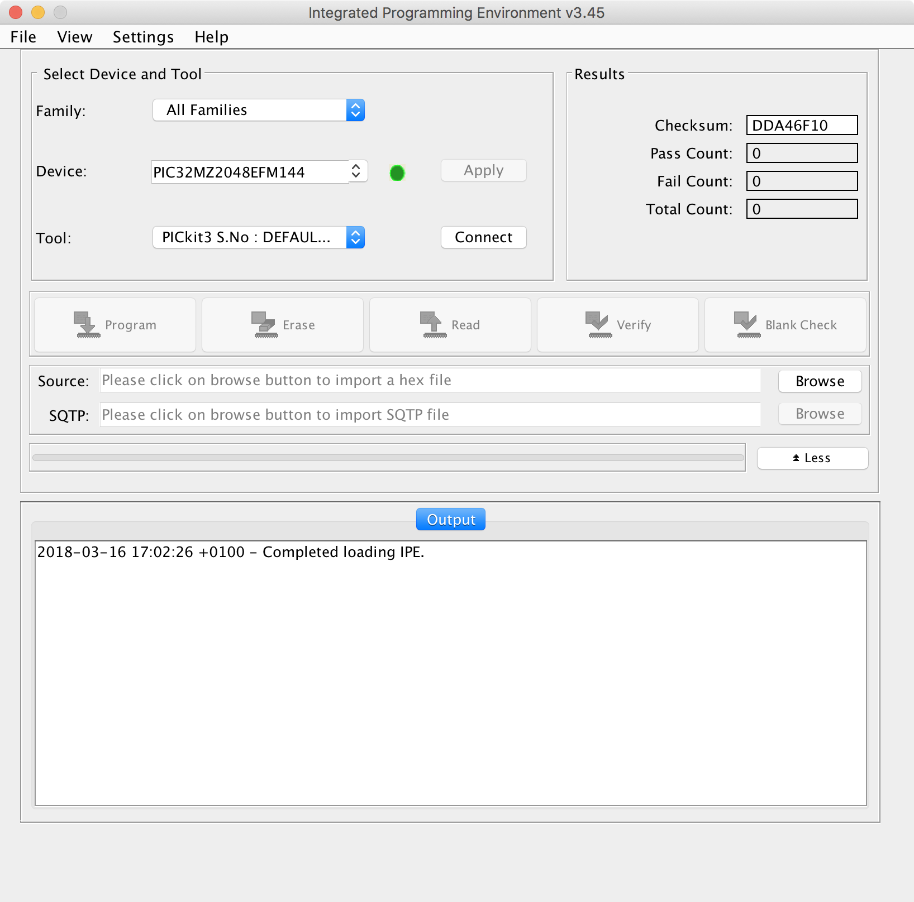

Programming hex files using MPLABX IPE
In this section, we briefly walk through the process of Programming The Things Gateway using the MPLAB IPE integrated programming environment
1. Connecting the Programmer
Connect the programmer to the MCU_PROG port of the gateway as shown below
Programmer<–>Gateway

2. Selection
Once connected, open the MPLAB IPE on your computer and select the device PIC32MZ2048EFM144.
Selection 
3. Connection
Click the connect button next to the Tool to allow the IPE to connect to the Programmer. This allows the IPE to read existing firmware information.
Connection

4. Load Hex File
Now load the hex file from your PC. The IPE checks it for validity.
Load Hex File

In case you encounter a warning
hexfile contains code that is located at addresses that do not exist on the device, you should still be able to continue with programming.
5. Start Programming
Now click Program to start the reprogramming of the gateway.
Start Programming

6. Verification
Once the program is complete, the checksums are verified.
Verification

Issues with the reprogramming? Please check The Things Gateway FAQ or reach out to us via The Things Network community forum